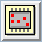
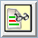
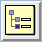
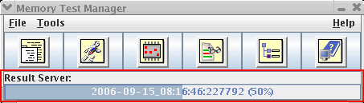

Memory Test Manager
The Memory Test Manager (MTM) is one access point for MTP tools.
When the MTM launches, it displays a single button bar:

Buttons
Clicking one of the buttons launches the corresponding tool:
Compiler control dialog. You can also use the MTP Build page to set up compiler options as well as others for build.
Execution dialog. If you want to execute an MTP testflow, use the MTP Launch page.

Bit Fail Map Viewer.
Memory Test Viewer.
Memory Pattern Validation Tool becomes obsolete in MTP 7.5.0, MTP 7.4.5, and future versions.MTP (Memory Test Plus) documentation.
Progress bar
During lengthy operations, a progress bar is displayed at the bottom of the MTM window:

The progress bar displays:
- The currently running tool (the Result Server, in the above illustration)
- The name of the file being processed (2006-09-15_08:16:46:227792, in the example)
- The completed percentage (50%, in the example), both as a number and by gradually filling the background
Menus
The Memory Test Manager has three menus:
- File
- The Exit command lets you close the MTM.
- Tools: The commands in the Tools menu duplicate the functions of the first five buttons described above.
- Help
- The MTP Help command duplicates the sixth button in the MTM window.
- The About command displays copyright and version information on the MTM.
Launching the MTM
The MTM can be launched from the terminal window or a GUI file manager, as described in Starting the Memory Test Manager.
Functional changes
- Introduced before SmarTest 6.3.2
- MTP 3.1.1: Accessing the main MTP tools from SmarTest Work Center is added.